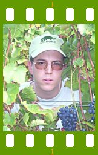

People of openSUSE: Christian Boltz

This week we interviewed Christian Boltz, one of the most active openSUSE development testers and bug reporters.
- Nickname: cboltz
- Homepage: www.cboltz.de also available in English: www.cboltz.de/en/ (yes, I should add a language selector one day)
- Blog: http://blog.cboltz.de
- Favorite season: Autumn, because this is when we have the grape harvest (which we usually call “Herbsten” – translates to “to autumn” ;-)) However I don’t have a strong preference, I also like the other seasons.
- Motto: Have a lot of fun…
Please introduce yourself!
My name is Christian Boltz. I live in Insheim, Germany. I’m a single and have no pets (except a stuffed geeko and tux). I won’t tell you my birthday, but you might be interested in the fact that my home network uses the easy-to-remember IPs in the 10.12.80.* range ;-)
I’m a wine-grower and master of about 60,000 grapevines – that means enough work all-year-round for me and my parents. Though I don’t make my own wine, just sell the grapes to the Deutsches Weintor, an agricultural cooperative society who presses the grapes and makes wine.
Besides that, I create websites (handwritten HTML/PHP and Typo3) and setup and maintain some webservers (running openSUSE of course) as a second job.
My hobbies are mostly computer related: – openSUSE (see below) – Fontlinge, a tool to manage large font collections – Postfixadmin
I’m active in the Landjugend Insheim (land youth Insheim) – we organized a soap box race, a 24 hour public grilling, a wine festival and several internal events this year. I’m also the webmaster of the land youth homepage.
Oh, and around christmas, I also play some songs on the keyboard.
Tell us about the background to your computer use.
My first computer was a 486 with a harddisk that did not even hold the content of a single CD. It was running Windows 3.11 on top of OS/2 (was a hype at this time) – not really a good idea with only 4 MB RAM. (It would still be interesting to see the performance of this combination on an up-to-date machine.)
I started with simple things like writing documents, some time later I wrote some small applications in Visual Basic just for fun (never released, but you probably wouldn’t like the code quality anyway ;-) I still suffer from VB because I often forget the semicolon after each command when writing in another language.
Over time I learned more computer skills as I needed them. For example, a teacher in vocational school had converted a text I wrote (5 pages) to JPGs and put them online. This gave me a reason to learn HTML because I wanted a better solution. The result was that I maintained a small website which also included texts from other pupils (unfortunately no longer online).
When and why did you start using openSUSE/SUSE Linux?
I started with SuSE Linux 7.0, which a friend recommended when I was fed up of Win98. After some time I booted Linux more frequently than Windows because Linux was better (hmmm, do I really need to mention this fact here? Everybody should know it already ;-))
When did you join the openSUSE community and what made you do that?
I joined the suse-linux mailinglist (now opensuse-de) in August 2001.
The initial reason was that I had some questions, but later I answered many more questions than I asked. In the SuSE Linux 9.2 beta phase, I was invited as beta tester and happily accepted. One of the reasons was curiosity and the chance to test the latest version. Another reason is simple: It’s better for me to report bugs in the beta (which usually get fixed) than to complain later that something doesn’t work (which is only fixed if it’s annoying enough). Making the distribution better for all users is a positive side-effect of this ;-)
In what way do you participate in the openSUSE project?
I participate in several ways: – beta testing (including reporting bugs) – on some mailing lists – as “Master of Action Items” (I got this title from Beineri in the 2007-08-15 status meeting) – I maintain apparmor.vim (apparmor syntax highlighting in vim) and help Martin with pin (Package INformation) – I also did some hours of booth duty at the LinuxTag
What especially motivates you to participate in the openSUSE project?
I want to make openSUSE better for everybody (including me, because I use it daily).
What do you think was your most important contribution to the openSUSE project/community or what is the contribution that you’re most proud of?
I’d say my most important contribution are bug reports – I filed about 600 bugs (not counting Action Items) since SuSE Linux 9.2.
About a year ago, I wrote a “best of” in my blog: “404 mal anders“. Even if you don’t understand German, you can have a look at the nicely decorated handbook (handbug?) of 9.2 with a paperclip at each error in the shell chapter. I can tell you that bugreporting can really be fun sometimes…
When do you usually spend time on the openSUSE project?
In the evening and in the night.
Three words to describe openSUSE? Or make up a proper slogan!
The best you can install on your computer!
What do you think is missing or underrated in the distribution or the project?
On the technical side, I think the openSUSE distribution is nearly perfect (I’ll cross out “nearly” when all bugs are solved and playing videos in all formats is supported out of the box ;-)
On the project side, opening up of existing structures (like FATE) takes quite long. I know things aren’t as easy as “just do it”, but it is still annoying that you have to wait for it that long.
What do you think the future holds for the openSUSE project?
More users, a larger community, more features and less bugs – at least I hope so ;-). I also think that the buildservice is an important service to attract users and packagers from other distributions. Maybe some of them will install openSUSE on their system…
A person asks you why he/she should choose openSUSE instead of other distribution/OS. What would be your arguments to convince him/her to pick up openSUSE?
The reason to use Linux is simple: it’s better than the other[tm] OS, it’s secure, you don’t depend on a specific vendor and you can get it for free. And it has config files in text/plain instead of a registry nobody understands.
I recommend to install openSUSE because it is both stable and up to date and already includes all the applications you need. Another reason is that I know it and can help if problems occur.
However, if someone uses another linux distribution and is happy with it, I won’t force him to switch to openSUSE.
Which members of the openSUSE community have you met in person?
Too many to list here – I’m quite sure I’d forget some people. Instead I’ll list the events where I have met them.
I have met several long-seasoned beta testers and SUSE employees at a beta tester meeting in Nürnberg, shortly before the openSUSE project was announced. I have also met some community members and SUSE developers at the LinuxTag in Karlsruhe, Wiesbaden and Berlin which I visited a few years ago.
How many icons are currently on your desktop?
10, but I rarely use them. The applications I need most (KMail, Konsole, Akregator) are started at login. For everything else, I use Alt-F2 (the “execute command” dialog) because it is faster than clicking around on the desktop or in the menu.
What is the application you can’t live without? And why?
It’s hard to list a single one.
If I had to go to a lonely island with only one application, I’d choose Konsole over KMail because Konsole can do everything – you can even read mail in it with “telnet $server 110”.
Which application or feature should be invented as soon as possible?
What about days with more than 24 hours? ;-)
On the technical side, I’d really like to have a vim KDE component that could be used in KMail etc. (:w!)
Which is your preferred text editor? And why?
vim – it provides the fastest way of editing I know. And it’s even faster if you map escape to your (otherwise useless) CapsLock key.
Which famous person would you want to join the openSUSE community?
Let 100000 users join the community, and I don’t care if one of them is famous or not.
Which computer related skills would you like to have?
Knowledge of C and C++ would be really useful because many applications are written in these languages.
The Internet crashes for a whole week. How would you feel, what would you do?
I’d go through my unread mails ;-)
Seriously: I would really miss the internet. However I always have some offline work to do – both at the computer and in the vineyards, so I wouldn’t be bored.
Which is your favorite movie scene?
My favorite movies are the later Star Trek movies, but I don’t have a favorite scene in them.
Star Trek or Star Wars?
Star Trek, especially The Next Generation, Deep Space Nine and Voyager.
What is your favorite food and drink?
Food: Chili-Bratwurst (chili frying sausage). It’s really hot and, additional bonus, nearly theft safe when grilling. If someone takes it accidently, you will hear him crying for water ;-)
Besides that, you can make me happy with a normal local meal and also with Italian food (pizza, pasta etc.). My favorite drink is wine (surprised?). Currently my favorite is the Dornfelder Jubiläumswein (Dornfelder is the (red) grape variety, Jubiläumswein means jubilee wine) – the Deutsches Weintor celebrated its 50th jubilee this year.
Favorite game or console (in your childhood and nowadays)?
I rarely play games on my computer, and if I do so, I prefer things like minesweeper and patiencen (aka solitaire) over complex games. Recently I “played” openSUSE and bugzilla ;-)
Which city would you like to visit?
I have no special target – except that it has to be something I didn’t visit before. And there’s no need to visit cities only, villages are also interesting. Exception: Berlin, at the next LinuxTag. I should take some time out for a sightseeing tour, which I didn’t do this year.
What is your preferred way to spend your vacation?
Travelling to other countries, visiting wine-growers and learn about specials in their region. And of course taste their wine. I don’t like to lie at the beach – I’m too restless for that.
Someone gives you $1.000.000. What would you do with the money?
Hmm, good question. I’d invest it with a bank and take some time to think about it for some time.From the interests, my first expenses would be some new hardware and some travelling. Then, hmmm, good question… — interview deadline reached — ;-)
If traveling through time was possible, when would we be most likely to meet you?
I like the time we’re in right now, but living on the Enterprise (TNG) and visiting other planets would be interesting also. But not on the Voyager please, it would take too long to come home.
There’s a thunderstorm outside. Do you turn off your computer?
I just turn off my external monitor and the laptop power supply. There was never a thunderstorm that took longer than my laptop battery lasted.
Have your ever missed an appointment because you forgot about it while sitting at your computer?
Well, I even missed the last openSUSE project meeting while sitting in front of the computer :-( (feel free to ping me if you see me online, but missing in the next meeting). Fortunately, I haven’t missed a real-world appointment yet, but I’m sometimes late (on not-so-important appointments) because I can’t break away from my computer early enough.
Show us a picture of something, you have always wanted to share!
Just take a look at the Landjugend Insheim gallery…
You couldn’t live without…
– wine (to drink, not the emulator) – working in the vineyards – I need the fresh air – my computer – the internet
Which question was the hardest to answer?
As in every good quiz show: the million dollar question.
What other question would you like to answer? And what would you answer?
What languages do you speak?
Pfälzisch (the palatinate dialect), german, english. And PHP, Perl, Bash, (My)SQL, HTML, POP3, SMTP and HTTP. No Basic anymore ;-)